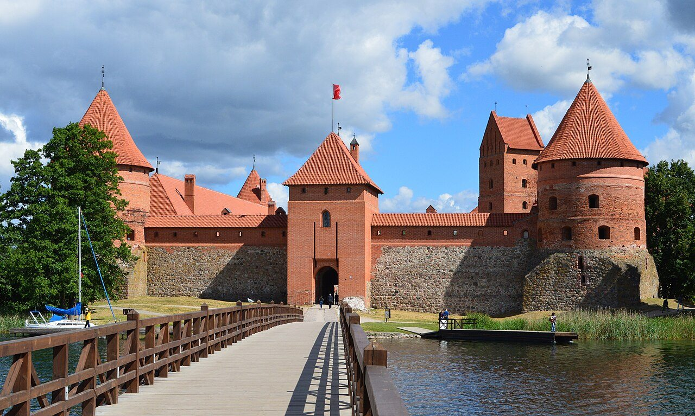
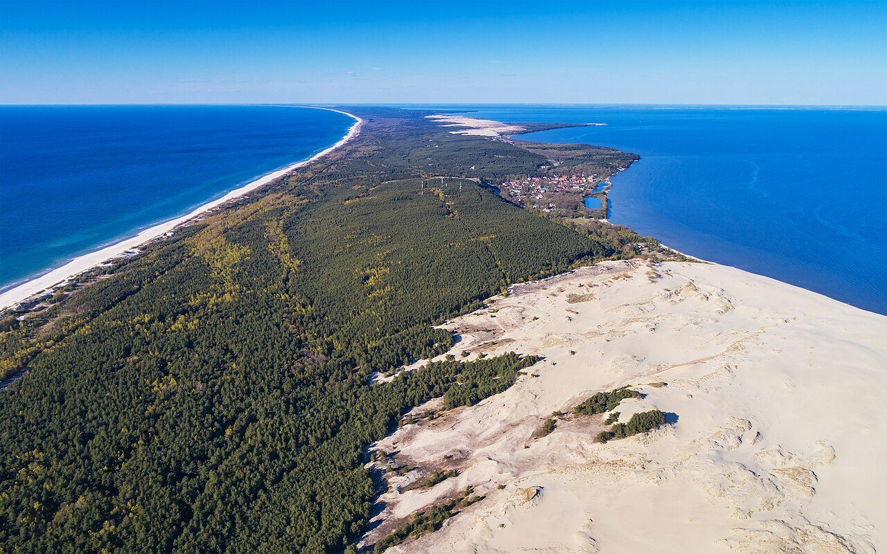
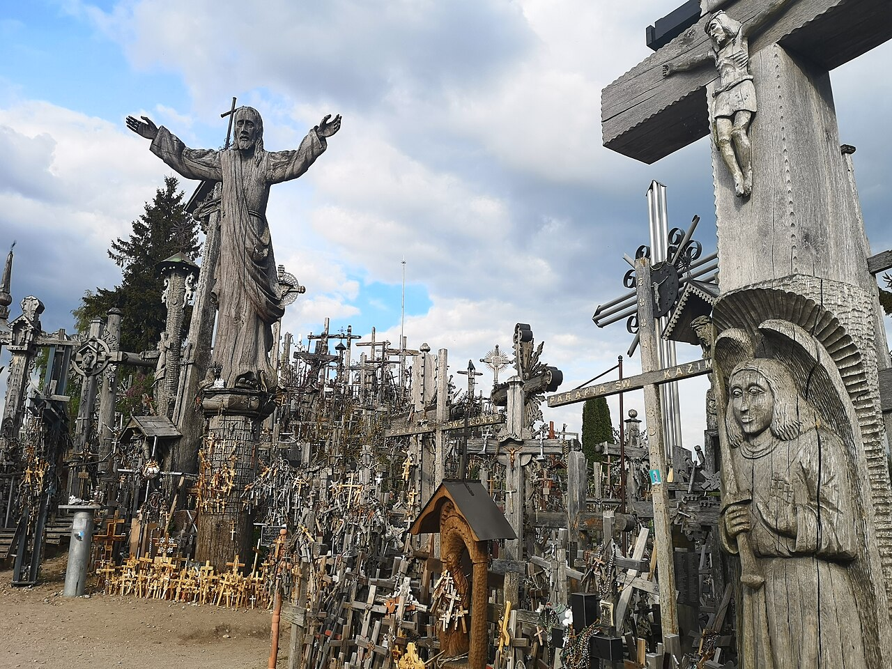

Lithuania리투아니아 Lietuva
대공국의 역사와 바로크 구시가지, 쿠로니아 사주의 나라
- Capital
- 빌뉴스 (Vilnius)
- Language
- 리투아니아어
- Currency
- 유로 (EUR)
 빌뉴스 구시가지Vilnius Old Town
빌뉴스 구시가지Vilnius Old Town

트라카이 호수성Trakai Island Castle
쿠로니아 사구Curonian Spit dunes
십자가 언덕Hill of CrossesExplore Lithuania
리투아니아 더 알아보기
발트해 연안의 리투아니아는 중세 대공국의 역사, 빌뉴스의 바로크 구시가지, 트라카이 섬의 요새, 쿠로니아 사주의 모래사구와 카우나스의 전간기 모더니즘 건축을 모두 보유한다. 언어적으로 라트비아어와 같은 발트어파에 속하며, 오늘날에는 핀테크·레이저·생명과학·디지털 서비스 등 첨단 산업을 육성하고 있다.
- 개요Overview소개, 기본 정보, 지리와 지역문화, 역사 연표
- 관광Travel빌뉴스 구시가지, 빌뉴스 대성당과 게디미나스 탑, 트라카이 호수성, 카우나스 모더니즘 건축, 쿠로니아 사주·니다 사구 등 15곳
- 음식Food체펠리나이 감자만두, 샬티바르슈차이 분홍수프, 샤코티스 나무케이크, 키비나이 반달 파이, 쿠겔리스 감자구이 등 15가지
- 언어Language언어 소개, 전체 알파벳 및 IPA (32자), 주요 발음 규칙과 기초 문법, 기본 회화 35개
- 문화Culture문화 주제 14가지
- 산업Industry최신 투자 프로젝트 실적 (2025년), 분야별 개요 (9개 업종)


Latest updates
리투아니아 최근 뉴스
-
독일 언론이 전한 러시아 종전 조건에 발트 3국 NATO 기지 금지…리투아니아는 3분기 GDP가 EU 최대 폭 감소
LRT는 독일 일간 빌트 보도를 인용해, 러시아의 비공식 제안에 발트 3국 내 NATO 기지 금지와 핀란드의 NATO 탈퇴 요구가 포함됐다고 전했습니다. 대가로 벨라루스 배치 핵무기 철수가 제시됐다고 합니다.
-
리투아니아, 중국 대표단과 외교 대표부 복원 협의…대만 대표처 명칭 변경 거론
LRT에 따르면 중국 외교부 유럽국 부국장 등 대표단이 리투아니아를 방문했고, 외교부와의 공식 협의는 13일로 예정돼 있습니다.
-
마크롱, 리투아니아에 카이사르 자주포 인도 앞당기겠다…공항 폐쇄 여파·대규모 문자 유출 사건
LRT에 따르면 나우세다 대통령은 마크롱 대통령이 리투아니아에 대한 카이사르 자주포 인도를 앞당기려 한다고 전했습니다.